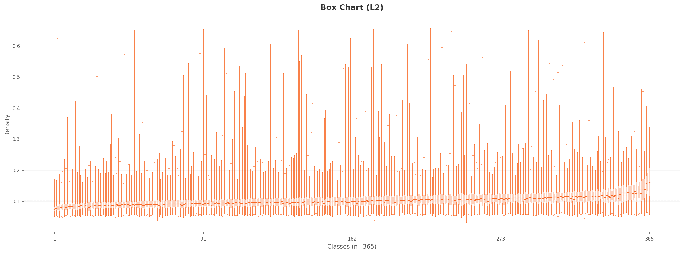
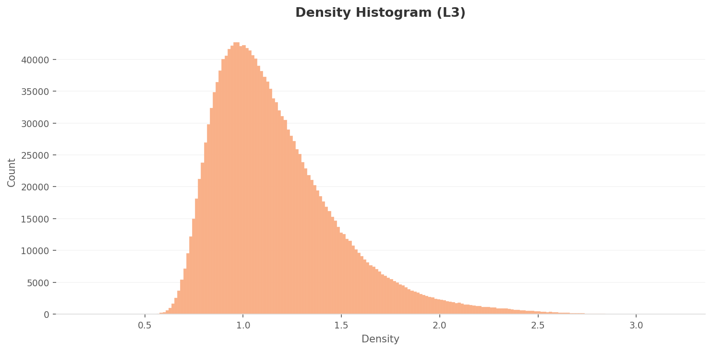

Executive Summary
MIT CSAIL's Places365 is the standard benchmark for scene recognition AI. 1.8 million images, 365 categories. An average of 4,941 images per class with a standard deviation of just 260. On the surface, it is one of the most balanced datasets ever built. If ImageNet is the go-to for object recognition, Places365 holds the same status for scene recognition. But there is one key difference: objects have contours. Places do not.
The DataClinic diagnostic reveals structural problems hiding beneath that balance. At least 61 classes overlap in the feature space, including 16 types of food-and-beverage venues and 8 types of residential spaces. An amusement_arcade image turns out to be a hockey arena scoreboard. A mosque-outdoor sample is the Taj Mahal. The labels are tidy, but the images tell a different story.
The place AI is most confident about is the Japanese zen garden, with a density of 0.660. The place it struggles with most is the lecture room, at 0.032. A 20x gap. Beneath the veneer of "uniform distribution," the visual identities of 365 places are drastically uneven. More data does not always mean better data.
Dataset Overview: The Second Pillar of CV
Places365 is a large-scale scene recognition dataset published in 2017 by Professor Bolei Zhou's team at MIT CSAIL. The paper is titled "Places: A 10 Million Image Database for Scene Recognition." In computer vision, if ImageNet asks "what is here," Places365 asks "where is here." Together, they form the two pillars of CV research.
The collage below showcases the extreme diversity of Places365 at a glance. From beaches and restaurants to zen gardens and stadiums, this is the world built by 365 categories of places.

▲ 1.8 million images of Places365 — from beaches and restaurants to zen gardens and stadiums, a world of 365 places
A total of 1,803,460 images. 365 classes. 99.75% RGB, 0.25% grayscale. Image dimensions range widely from 400x134 to 7,972x512, reflecting the characteristics of a web-crawled dataset. With an average of 4,941 images per class, Places365 serves as the de facto standard benchmark in virtually every field that requires scene recognition: autonomous driving, robot navigation, AR/VR, and real estate AI.
DataClinic Report
Report #126 | Lens: Wolfram ImageIdentify Net V2 (v1.6) | View full diagnostic results →
1.1ImageNet vs Places365: What Sets Them Apart
The fundamental difference between the two datasets comes down to boundaries. In ImageNet, a cat and a dog have different silhouettes. Objects have edges, anchors that AI can latch onto. But what anchor separates a restaurant from a cafe? Table arrangement? Lighting? For many of the 365 categories, the dividing line simply cannot be seen from the image alone.
| Attribute | ImageNet | Places365 |
|---|---|---|
| Image Count | 1.43M | 1.8M |
| Class Count | 1,000 (objects) | 365 (places) |
| Classification Target | Objects, animals | Places, scenes |
| Class Balance | 1,300 imgs/class | 4,941 imgs/class (std 260) |
| Core Challenge | Distinguishing similar objects | Same place, different name |
Perfect Balance at First Glance: Level I Diagnostic
Level I examines the basic statistics of the images themselves: class balance, pixel distribution, and mean images. The first impression of Places365 is remarkably clean.
2.1Class Balance: Evidence of Intentional Design
The average is 4,941 images per class with a standard deviation of just 260 — a mere 5.3% of the mean. 94% of the 365 classes contain exactly 5,000 images. Only 26 classes (7.1%) fall below 5,000, with the minimum being 3,068 for dressing_room. This is clear evidence that the MIT team intentionally designed for balance. On the surface, it looks like a textbook dataset. The trouble lies beneath this balance, in the feature space.
2.2Pixel Histogram: The Imprint of the Sky
The per-channel pixel distribution reveals that the Blue channel dominates Red and Green across the entire range. At value 255 (pure white), Blue spikes to approximately 1.4x109 counts. This means the dataset is heavily loaded with outdoor place images featuring saturated skies. The chromatic fingerprint of a scene dataset is written right here.
▲ Blue dominates Red/Green — the chromatic fingerprint of a scene dataset rich in sky and sea
2.3Global Mean Image
What image remains when you average all 1.8 million photos? A uniform brownish-gray blur. All structural detail vanishes. But look closely: the top is slightly brighter and the bottom slightly darker. The universal composition of outdoor scenes is imprinted in the statistics. Sky above, ground below.

▲ Average all 1.8M images and what remains: sky above, ground below
2.4Six Extreme Pairs: Where AI Is Most Confident and Most Lost
Within the same dataset, AI confidence diverges dramatically. High-density classes have visually unique and consistent textures. Low-density classes contain label errors or images that capture people and activities rather than the place itself. In each card, the left side shows an actual sample image and the right side shows the mean image for that class.
Top 3 Places AI Is Most Confident About
 Actual
Actual
 Mean
Mean
 Actual
Actual
 Mean
Mean
 Actual
Actual
 Mean
Mean
Top 3 Places AI Is Most Lost In
 Actual
Actual
 Mean
Mean
 Actual
Actual
 Mean
Mean
 Actual
Actual
 Mean
Mean
▲ Left in each card: actual sample image / Right: mean image. 20x density gap.
zen_garden has an unmistakable texture: raked sand patterns. No matter where you shoot it, it looks like a zen garden. In contrast, the low-density outlier in amusement_arcade is a hockey arena scoreboard. Scotiabank and Coca-Cola ads with a score display have absolutely nothing to do with an arcade. It is a clear label error. Among lecture_room images, there is an orchestra rehearsal scene. The image captures an activity, not a place.
The Visual Identity of 365 Places: Level II Diagnostic
Level II analyzes images in a 1,280-dimensional Wolfram feature space. Instead of pixels, it looks at data through the high-dimensional characteristics perceived by a neural network. This is where the true face of Places365 emerges.
3.1L2 Density Distribution: Most Images Cluster Without Distinction
The L2 density histogram shows a strong right-skewed distribution. The peak sits around 0.085-0.09 with approximately 135,000 counts. The vast majority of images are concentrated in the 0.06-0.15 range. In the high-dimensional feature space, most place images occupy a similar density region. The distinction between places is weak.
 Density
Actual
Density
Actual

Box Chart
Actual
▲ Left: chart / Right: representative image at each density extreme
3.2PCA and Density Heatmap: One Giant Cloud
When projecting 1,280 dimensions onto 2D, the mean features of all 365 classes form a single elliptical cluster. Indoor and outdoor places overlap in 2D, merging into one cloud. The convex hull takes a kite shape pointing toward the upper-right, indicating that a few extreme classes sit far from the center of the feature space.

L2 PCA — single elliptical cluster

L2 density heatmap — centrally concentrated
3.3Two Root Causes of Low Density
Analyzing the low-density outliers reveals two root causes. The first is label errors. The outlier in amusement_arcade (density 0.037) is a close-up of a hockey arena scoreboard. An image with no connection to arcade games carries an arcade label. The second is people-centric images. The outlier in lecture_room (density 0.032) is an orchestra rehearsal scene. The conductor and musicians fill the frame, making it impossible for the neural network to recognize a "place." The image captures an activity, not a space.
The cause of high density is straightforward. The raked sand patterns of zen_garden, the red walls and gold ornaments of throne_room, the domes and minarets of mosque-outdoor. Visually unique and consistent classes cluster tightly in the feature space. However, among the high-density images of mosque-outdoor is the Taj Mahal. It is a mausoleum, not a mosque, yet it carries a mosque label.
The Effect of Dimensionality Optimization: Level III Diagnostic
Level III reduces 1,280 dimensions to 70 while optimizing class separability. Structure hidden in L2 becomes visible in L3.
4.1L3 Density Distribution: Wider Spread, Sharper Distinction
The L3 density distribution is wider than L2. The peak sits around 0.85-0.95 at roughly 43,000 counts, about one-third of the L2 peak. The density range expands to 0.4-3.1, far broader than L2's 0.03-0.66. After dimensionality reduction and class-separability optimization, images have dispersed more widely in the feature space.

Density High Density
High Density
 Box Chart
Low Density
Box Chart
Low Density
▲ In L3, per-class density differences become much more pronounced
4.2PCA and Density Heatmap: Evidence of Structural Separation
The L3 PCA projection shows a more circular and uniform point distribution compared to L2. The extreme outlier points seen in L2 diminish, making the inter-class feature distribution more compact. The L3 density heatmap is markedly different from L2. While L2 showed a single high-density concentration, L3 reveals two to three density centers. This is evidence that dimensionality optimization has produced structural separation in the feature space.

L3 PCA — rounder and more uniform

L3 density heatmap — 2-3 density centers
L2 vs L3 Key Difference: In L2, "all places form one cloud." In L3, "places begin to form groups." Reducing dimensions strips away unnecessary noise and reveals hidden internal structure. Yet even in L3, the boundaries between confusion groups remain blurry.
The Real Problem: Places That Look Alike
The structural problem with Places365 is not the density gap itself but the places that resemble each other. At least 61 of the 365 categories (16.7%) encroach on each other's territory in the feature space. Six confusion-prone groups illustrate this.
| Confusion Group | Classes | Representative Classes | Real-World Impact |
|---|---|---|---|
| Food & Beverage | 16 | restaurant, cafeteria, bar, coffee_shop, pub... | Food delivery AI confuses cafes with restaurants |
| Outdoor Water | 11 | ocean, coast, beach, lagoon, lake... | Drone landing point misjudgment |
| Stadiums | 10 | arena-hockey, stadium-baseball, gymnasium... | Navigation POI misclassification |
| Natural Terrain | 9 | mountain, canyon, cliff, butte, volcano... | Hiking safety AI misjudgment |
| Indoor Residential | 8 | bedroom, hotel_room, dorm_room, bedchamber... | Real estate auto-classification errors |
| Exhibition Spaces | 7 | museum-indoor, art_gallery, library-indoor... | Tourism guide bot confusion |
Food and beverage venues top the list with 16 types: restaurant, cafeteria, dining_hall, dining_room, food_court, fastfood_restaurant, pizzeria, sushi_bar, coffee_shop, bar, pub-indoor, beer_hall, beer_garden, delicatessen, bakery-shop, ice_cream_parlor. What these 16 classes share visually is "tables, chairs, and lighting." Camera angles are similar too. High overlap in the feature space is inevitable.
The indoor residential problem is even more severe. bedroom, bedchamber, hotel_room, dorm_room. These four classes share an almost identical visual composition: "bed, lighting, furniture." To AI's eye, a bedroom and a hotel room are the same place.
The similarity nearest-neighbor analysis backs this up. The neighbors of arena-performance include basketball_court-indoor and gymnasium-indoor. This is evidence that stadium-type class features genuinely overlap. Conversely, all 10 neighbors of sandbox are sandbox, and all 10 neighbors of landfill are landfill. Visually distinctive classes defend their territory. The more generic a place, the more it trespasses on others.
The 365 categories are academically precise. But in the eyes of AI, 61 of them trespass on each other's territory. The precision of a taxonomy and the visual distinguishability of its classes are two entirely separate matters.
So What: When You Train on This Data
How do the problems in Places365 manifest in practice? Consider three scenarios.
6.1Real Estate AI Confuses the Rooms
A real estate platform auto-classifies property photos. bedroom, bedchamber, hotel_room, dorm_room. Four classes sharing an almost identical visual composition of "bed + lighting + furniture." The AI classifies a studio apartment as a hotel room and a hotel room as a dormitory. The granular distinction created by 365 categories becomes the very source of confusion.
6.2The Scoreboard Trap for Autonomous Driving
A hockey arena scoreboard hides under the amusement_arcade label. An autonomous driving AI trained on such label errors could see an arcade sign and conclude it is near a sports arena. The sheer scale of 1.8 million images does not dilute the error. If anything, scale lends false confidence. "It must be fine, there are 1.8 million images."
6.3The Heritage Guide Robot Gets It Wrong
The high-density image in the mosque-outdoor class is the Taj Mahal. It is a mausoleum labeled as a mosque. A heritage guide robot trained on this data would announce, "This is a mosque." The domes and minarets share architectural similarities, but the functions are entirely different. A mosque is a place of worship; the Taj Mahal is a tomb.
The irony: The place AI is most confident about is zen_garden (density 0.660), while the most confusing is amusement_arcade (density 0.037). An 18x density gap. A uniform class distribution does not guarantee uniform quality.
Prescriptions: Redrawing the Boundaries of 365 Places
The problem with Places365 is not the volume of data but the clarity of its boundaries. Four prescriptions are proposed.
References
- • Zhou, B., Lapedriza, A., Khosla, A., Oliva, A., & Torralba, A. (2017). Places: A 10 Million Image Database for Scene Recognition. IEEE Transactions on Pattern Analysis and Machine Intelligence, 40(6), 1452-1464.
- • Deng, J., Dong, W., Socher, R., Li, L.-J., Li, K., & Fei-Fei, L. (2009). ImageNet: A large-scale hierarchical image database. CVPR 2009.
- • DataClinic Report #126 — Places365-standard. dataclinic.ai/en/report/126